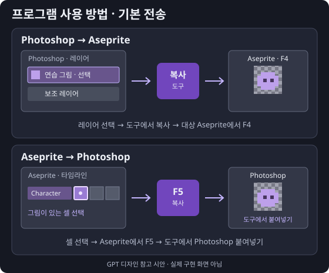
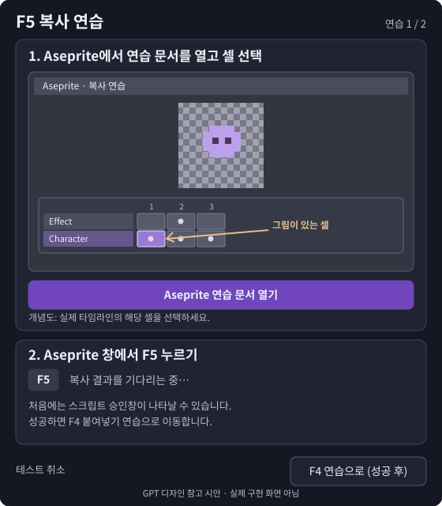
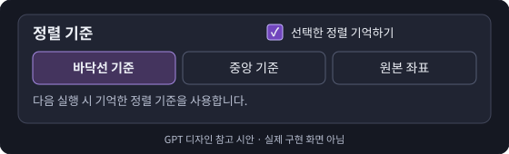

프로그램 사용 방법
GPT 디자인 참고 시안 · 실제 제품 또는 실행 증거가 아닙니다.

실제 조작 위치
실제 Photoshop 레이어 패널, Aseprite 타임라인 및 도구 버튼 위치의 캡처 또는 정확한 그림으로 교체·보강합니다.

프레임 변환
기존 OptionDiagram의 검증된 그림을 재사용합니다. 이 문서의 아래 도식은 정보 구조 참고입니다.
폴더 → 프레임
폴더별 연속 프레임
▰ ▱ ▰
▰ ▰ ▱
레이어 → 프레임
픽셀 레이어마다 한 프레임
▰ ▰ ▰
정렬 기준
복사 영역 전체 기준. 바닥선 정렬은 Aseprite 붙여넣기에 적용합니다.

복사본 변형
원본 문서가 아닌 복사본에 적용됩니다. 실행 취소·다시 실행으로 복사본 편집 이력을 이동합니다.